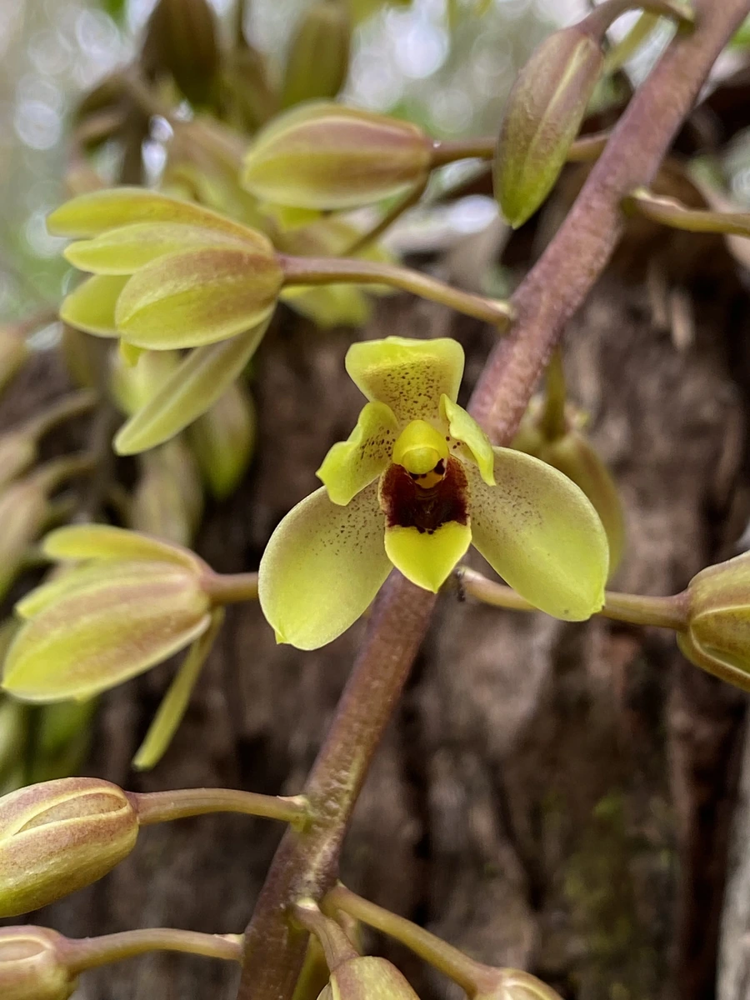

花卉与草本 · 植物界
大花蕙兰 Cymbidium hybrid

兰科兰属的大型园艺杂交兰，花序长、花朵大而艳丽，花期可长达两三个月，是春节年宵花市的主力花卉之一。
- 分类
- 门被子植物门纲木兰纲目天门冬目科兰科属兰属
- 栖息环境
- 杂交种，喜温暖湿润、半阴通风、昼夜温差大
- 地理分布
- 园艺杂交品种，中国云南、广东等地规模化生产，世界各地盆栽
- 保护级别
- 暂无评估（园艺杂交品种）
物种志
大花蕙兰为兰科兰属多年生附生或半附生草本，是园艺杂交品种群，假鳞茎粗大，叶片带状、革质，长 50–100 厘米。花葶自假鳞茎抽出，长 40–80 厘米，着花 10–20 朵，花大，直径 6–10 厘米，有红、粉、黄、绿、白及复色，花期 12 月至翌年 4 月。
大花蕙兰由兰属多个原生种杂交选育而成，亲本多原产中国西南、东南亚的高海拔地区，喜温暖湿润、半阴通风和昼夜温差较大的环境，忌强光暴晒和积水。它株型高大、花序丰满，单枝花期可长达两三个月，是春节年宵花市的主力花卉；栽培常用树皮、水苔等透气基质，花后可剪去花葶、保留叶片养球，来年再开花。
形态与习性
- 株高花葶长 40–80 厘米，着花 10–20 朵
- 花期12 月至翌年 4 月
- 果期花后结蒴果
- 光照喜半阴散射光，忌强光暴晒
- 水分喜湿润，空气湿度 60%–80%
- 土壤以树皮、水苔等透气基质栽培
- 主要用途年宵花、切花、盆栽
趣味知识
- 大花蕙兰是兰属多个原生种杂交选育的品种群，不是自然物种。
- 单枝花序可开两三个月，是春节年宵花市的主力之一。
- 亲本多来自中国西南和东南亚的高海拔地区，喜昼夜温差大的环境。
- 花后剪去花葶、保留叶片养球，是来年再次开花的关键。